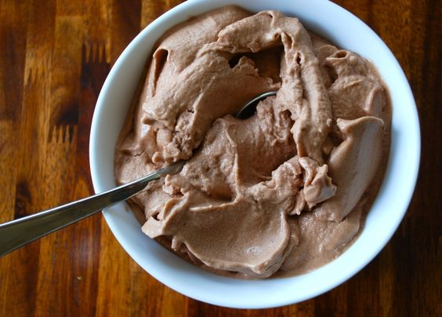

Protein Ice Cream

A homemade Protein Ice Cream
I discovered this recipe from the cookbook of Greg Doucette (The Anabolic Cookbook 2.0)
Ingredients
- Protein Powder (Chocolate flavored)
- Xanthum gum
- PB2 Powder
- Milk
- Ice
- Sweetner (Fake sugar)
Steps
- Start by putting ice into blender and grinding it down
- Follow this up by adding around half a cup of milk of your choice (Almond works best here)
- Blend that together and then add a full serving of your protein powder
- Add a serving of your PB2 powder (2 TBSPS)
- Blend that all together, It should be liquid at this point.
- Add in around 2 teaspoons of xanthum gum and 2 packets of your sweetner
- The xanthum gum will severely thicken this dish into making it the (Ice Cream) that it's supposed to be
- Once all blended together you're going to want to bowl it into a chilled bowl and eat